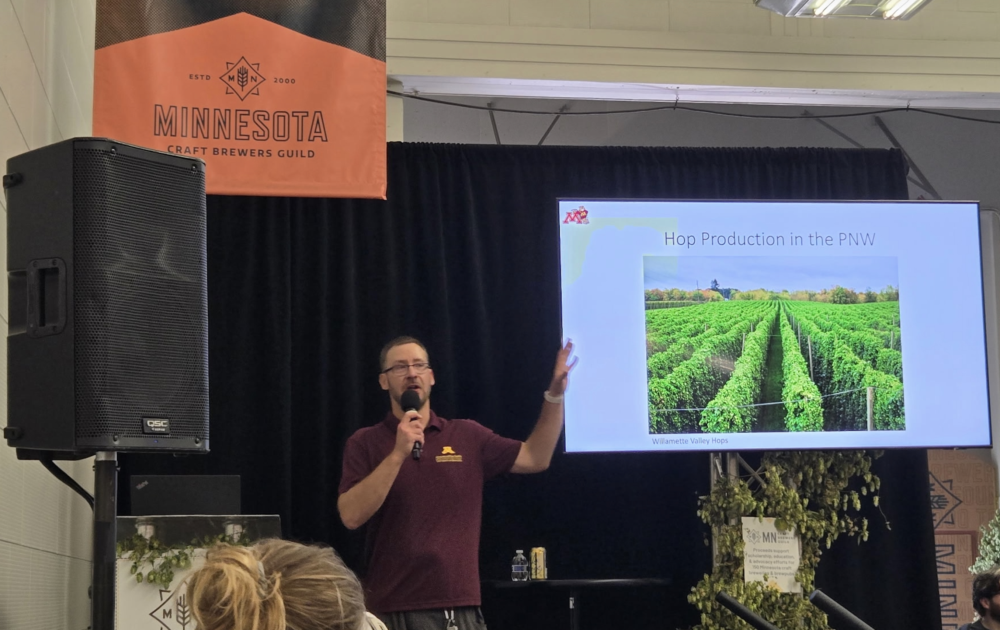
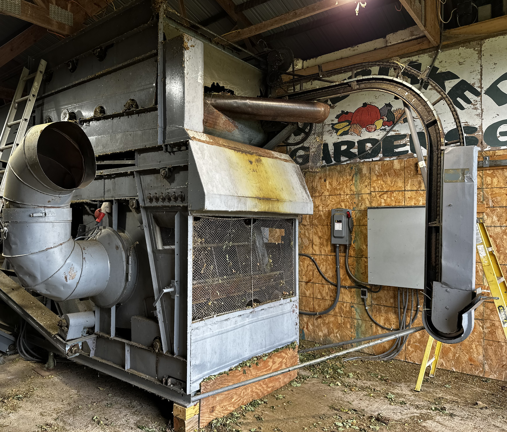

Joshua Havill, Ph. D.
Hop (Humulus lupulus L.) is a dioecious, perennial plant and the primary bittering and flavoring agent in beer. Hop breeding has long focused on developing varieties that contain favorable agronomic characteristics and unique flavors and aromas. While only female plants are cultivated commercially for their inflorescence or "cones", breeding and germplasm collections contain male and female plants which are used as breeding parents to develop novel variation including for disease resistance. However, we still lack a complete understanding of the genome organization and structure within Humulus germplasm resources. Multiple lines of evidence indicate the presence of significant structural variation within and between individuals, and especially between previously described subpopulations. By developing a better understanding of hop genome organization, we can develop tools to more efficiently introgress novel alleles from diverse germplasm. As a part of my USDA-NIFA Postdoctoral Fellowship, I will develop Humulus pangenomic resources to enable development of genomics-assisted breeding tools to aid in modernizing hop breeding programs. My objectives include 1) Develop a hop pangenome and examine comparative genomics and diversity within the Humulus species; 2) Assess the utility of the hop pangenome graph via a pangenome-wide association study, or panGWAS.

